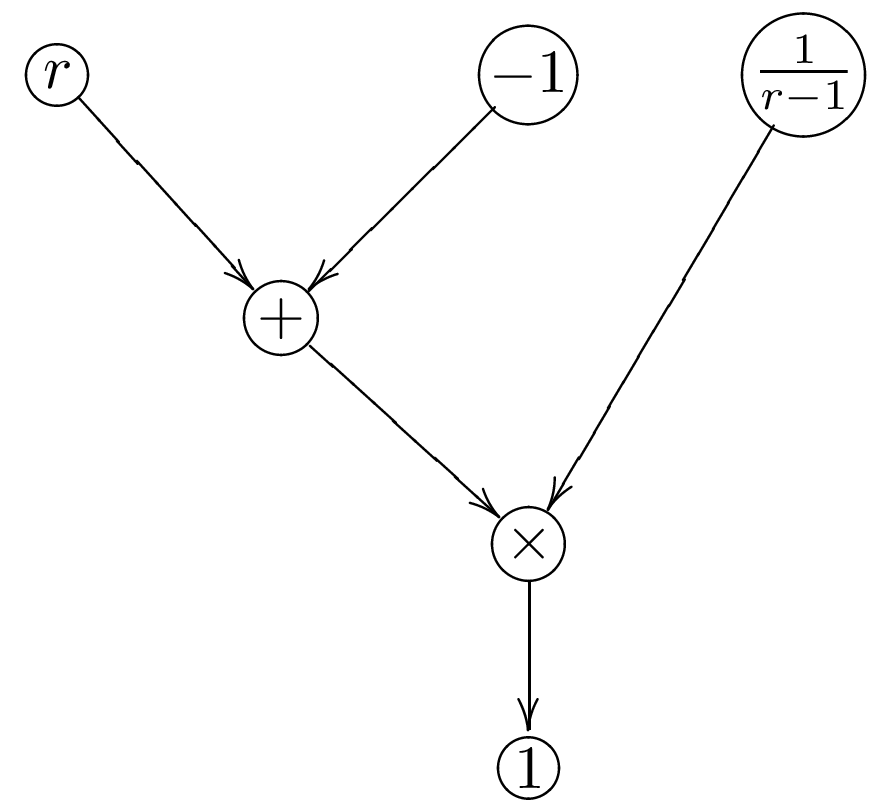
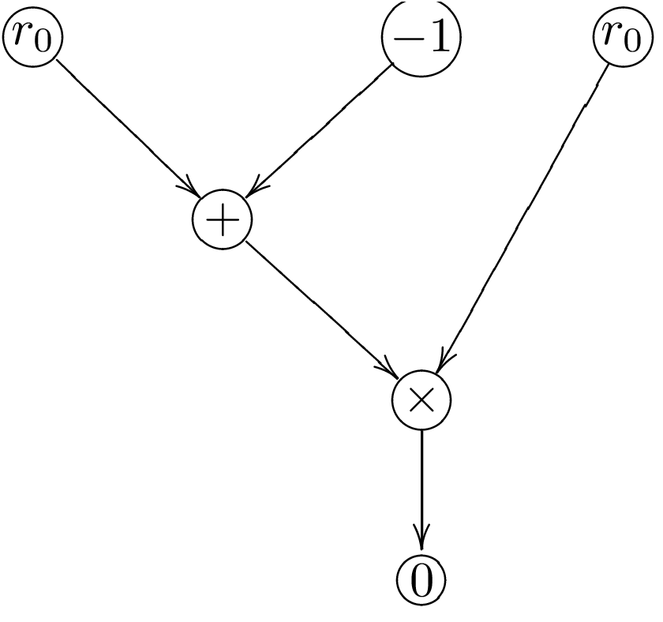

<!DOCTYPE html>
<html lang="en">

<head>
  <meta charset="utf-8" />
  <meta name="viewport" content="width=device-width, initial-scale=1.0, maximum-scale=1.0, user-scalable=no" />

  <title>ZK proofs</title>
  <link rel="icon" href="./../../assets/favicon.svg" />
  <link rel="shortcut icon" href="./../../assets/favicon.png" />
  <link rel="stylesheet" href="./../../dist/reset.css" />
  <link rel="stylesheet" href="./../../dist/reveal.css" />
  <link rel="stylesheet" href="./../.././assets/styles/PBA-theme.css" id="theme" />
  <link rel="stylesheet" href="./../../css/highlight/shades-of-purple.css" />

  <link rel="stylesheet" href="./../.././assets/styles/custom-classes.css" />

</head>

<body class="site">
  <header class="site-header">
    <!-- This logo is a link only on the watching server, not the production build -->
    <a href="">
      
    </a>
  </header>
  <main class="reveal">
    <article class="slides">
      <section  data-markdown><script type="text/template">
# Cryptography Day III

<pba-flex center>

- ZK Proofs<!-- .element: class="fragment" data-fragment-index="0" -->
- Exotic Primitives<!-- .element: class="fragment" data-fragment-index="1" -->
- Invited Lectures<!-- .element: class="fragment" data-fragment-index="2" -->
- Cryptography in Context<!-- .element: class="fragment" data-fragment-index="3" -->

</pba-flex>
</script></section><section  data-markdown><script type="text/template">
# ZK Proofs
</script></section><section  data-markdown><script type="text/template">
# Outline

<pba-flex center>

1. [ZK Proofs overview](#zk-proofs)<!-- .element: class="fragment" data-fragment-index="0" -->
2. [Examples](#simple-zk-example)<!-- .element: class="fragment" data-fragment-index="1" -->
3. [zk-SNARKs](#zk-snarks)<!-- .element: class="fragment" data-fragment-index="2" -->
4. [Applications of zk-SNARKs](#zk-application)<!-- .element: class="fragment" data-fragment-index="3" -->
5. [Under the hood of zk-SNARKs](#zk-practice)<!-- .element: class="fragment" data-fragment-index="4" -->
6. [Generating ZK-proofs using Circom and snarkjs](#circom-snarkjs)<!-- .element: class="fragment" data-fragment-index="6" -->

</pba-flex>
</script></section><section  data-markdown><script type="text/template">
## ZK Proofs

How do we do private operations on a public blockchain<br />and have everyone know that they were done correctly?

<aside class="notes"><p>(we are working on substrate support for these and will use them for protocols)</p>
</aside></script></section><section  data-markdown><script type="text/template">
## What is a ZK Proof?

- A prover wants to convince a verifier that something is true without revealing why it is true.

- They are mostly interactive protocols, but mostly we'll turn them non-interactive and deal with their non-interactive variety. 

<aside class="notes"><ul>
<li>Interactive means multiple back and forthes between parties. It requires that the parties to be online at the same time.</li>
<li>Non-interactive means one party post their contribution and the other party could use the data at the time of their convinience. 
This does not require the praties to be online at the same time.</li>
</ul>
</aside></script></section><section  data-markdown><script type="text/template">
## What can we show?

- NP relation: `function(statement, witness) -> bool`

- Prover knows a witness for a statement:

  - They want to show that they know it (_a proof of knowledge_)

  - ... Without revealing anything about the witness (_ZK_)

<aside class="notes"><p>NP problems are problems that might be hard to solve but are relatively  easy to verify. Easy as in &quot;polynomial time&quot;.</p>
</aside></script></section><section  data-markdown><script type="text/template">
## ZK Proof Interface

- NP relation: `function(statement, witness) -> bool`

- `prove(statement, witness) -> proof`

- `verify(statement, proof) -> bool`
</script></section><section  data-markdown><script type="text/template">
## Examples</script></section><section  data-markdown><script type="text/template">
## ZK Proof Example

_Example:_ Schnorr signatures are ZK Proofs
- $(s, e)$ such that $s = (\textrm{Random blinding factor }r) - \\ \textrm{Private Key} \times e$<!-- .element: class="fragment" data-fragment-index="0" -->
- They show that the prover knows the private key such that $\textrm{private key} \times G = \textrm{Public Key}$ without revealing anything about it.<!-- .element: class="fragment" data-fragment-index="1" -->
- The statement is the public key and the witness the private key.<!-- .element: class="fragment" data-fragment-index="2" -->
</script></section><section  data-markdown><script type="text/template">
## The ZK Proof Example we study in this module

_Example:_ Prover knows a non-trivial factorization of N.

- Prover wants to prove that they know $N = r \times s$  without revealing $r$ or $s$.<!-- .element: class="fragment" data-fragment-index="0" -->
- The Prover should convince us they know the two non-trivial integer $r$ and $s$ that is $r,s \neq 1$ such that:<!-- .element: class="fragment" data-fragment-index="1" -->

 $r\times s = N$ <!-- .element: class="fragment" data-fragment-index="1" -->

- Without revealing any other information about $r$ or $s$.<!-- .element: class="fragment" data-fragment-index="2" -->
- The statement is $N$ and the witnesses are $r$ and $s$.<!-- .element: class="fragment" data-fragment-index="3" -->

</script></section><section  data-markdown><script type="text/template">## ZK Proof properties.
 - Completeness: If the claim is true, then it *must* pass `verify(statement, proof) == true`
 - Statistical Knowledge Soundness: If the prover does not know the witness then `verify(statement, proof) == false` with high probability.
 - Zero Knowledge: the proof reveals nothing about the witness that was not revealed by the statement itself.<!-- .element: class="fragment" data-fragment-index="0" --> 
 - The common way of implementing zero knowledge protocol is by means of zk-SNARK.<!-- .element: class="fragment" data-fragment-index="1" --> 

<aside class="notes"><ul>
<li>We prove Zero knowldege by showing a party without any knowledge of the witness, could fool an external party who was not been part of the interaction that they interacted with the prover and got a valid proof form the prover.</li>
</ul>
</aside></script></section><section  data-markdown><script type="text/template">
## zk-SNARKs
</script></section><section  data-markdown><script type="text/template">
## zk-SNARK

**Z**ero-**K**nowledge **S**uccinct **N**on-interactive **Ar**gument of **K**nowledge

- **Zero knowledge** - the proof reveals nothing about the witness that was not revealed by the statement itself.
- **Succinct** - the proof is small
- **Non-interactive** - Does not require live interaction between the prover and verifier.
- **Proof of knowledge** - if you can compute correct proofs of a statement, you should be able to compute a witness for it.
</script></section><section  data-markdown><script type="text/template">
## What can we show?

- NP relation: `function(statement, witness) -> bool`

  - They want to show that they know it (_a proof of knowledge_)

  - ... Without revealing anything about the witness (_ZK_)

- With a small proof even if the witness is large (_succinctness_)
</script></section><section  data-markdown><script type="text/template">
## What can we show?

- There are many SNARK schemes to produce succinct ZK proofs of knowledge (_ZK-SNARKs_) for every NP relation. We concentrate on PLONK in this course.
</script></section><section  data-markdown><script type="text/template">
## Applications of zk-SNARKs
</script></section><section  data-markdown><script type="text/template">
## ZK Proof Scaling

- A small amount of data, a ZK proof, and execution time can be used to show properties of a much larger dataset which the verifier doesn't need to know. 
- "doesn't need/want to" know as opposed to "is not supposed to" know.<!-- .element: class="fragment" data-fragment-index="1" --> 
</script></section><section  data-markdown><script type="text/template">
## Scaling via ZK Proofs in Blockchain

- Large amount of data - a blockchain
- Verifier is e.g. an app on a mobile phone

<aside class="notes"><p>e.g. Mina do a blockchain with a constant size proof (of correctness of execution and consensus) using recursive SNARKs.</p>
</aside></script></section><section  data-markdown><script type="text/template">
## Scaling via ZK Proofs in Blockchain

- The verifier is a blockchain: very expensive data and computation costs.
- Layer 2s using ZK rollups

<aside class="notes"><p>Of which Ethereum has many, ZKsync, ZKEVM etc.
Polkadot already scales better!</p>
</aside></script></section><section  data-markdown><script type="text/template">
## Privacy

<pba-flex center>

A user has private data, but we can show<br />publicly that this private data is correctly used.<br />
An example would a private cryptocurrency:

- Keep who pays who secret
- Keep amounts secret, <br /> _But show they are positive!_

</pba-flex>

<aside class="notes"><p>You can do some of keeping amounts secret without ZK-SNARKs, but the positive part is difficult.
To do everything well, ZK-SNARKs are needed in e.g. ZCash and its many derivatives e.g. Manta.</p>
</aside></script></section><section  data-markdown><script type="text/template">
## Under the hood of zk-SNARKs

- We are going to talk about the elementary math behind zk-SNARKs.
- The goal is to familiarize you with the magic behind the zk-SNARKs.<!-- .element: class="fragment" data-fragment-index="0" --> 
- But we are not aming at making you zk-Proof expert in one lecture.<!-- .element: class="fragment" data-fragment-index="1" --> 

<aside class="notes"><ul>
<li>Don&#39;t worry if you are not able to follow. Not essential.<!-- .element: class="fragment" data-fragment-index="0" --></li>
</ul>
</aside></script></section><section  data-markdown><script type="text/template">
## Making a SNARK out of the factorization problem

- The trick  is to transform our problem of proving the knowledge of factors (witnesses) into:<!-- .element: class="fragment" data-fragment-index="0" --> 
- A problem of knowledge of certain polynomials.<!-- .element: class="fragment" data-fragment-index="1" --> 
- $x^n + a_{n-1} x^n-1 + \dots + a_1x + a_0$ <!-- .element: class="fragment" data-fragment-index="2" --> 
- Then verifier could ask me questions about those polynomials, and if the prover answers correctly,<!-- .element: class="fragment" data-fragment-index="3" --> 
- The verifier could be fairly confident that the prover knows that polynomial hence also the witness.<!-- .element: class="fragment" data-fragment-index="4" --> 
</script></section><section  data-markdown><script type="text/template">
## Making an SNARK for knowledge of factors problem

- A routine way of to turning the problem into a polynomial is:
1. To represents our problem into an arithmetic circuit.<!-- .element: class="fragment" data-fragment-index="1" --> 
2. Then there are algorithms such as PLONK for representing the circuit as few univariate polynomials.<!-- .element: class="fragment" data-fragment-index="2" --> 

<aside class="notes"><ul>
<li>Mathematically circuit is a n-variate polynomials, with some of the variables are public and some are not.</li>
</ul>
</aside></script></section><section  data-markdown><script type="text/template">

## The conditions the prover's solution must satisfy

- $r \times s = N$<!-- .element: class="fragment" data-fragment-index="0" --> 
- We also need to make sure that prover doesn't fool us with trivial factors.<!-- .element: class="fragment" data-fragment-index="1" --> 
- prevent them from using $r = 1$ or $s = 1$ only using polynomial equations.<!-- .element: class="fragment" data-fragment-index="2" --> 
- $r \neq 1$ is not a polynomial equation.<!-- .element: class="fragment" data-fragment-index="3" --> 
- So we ask them to invert $r - 1$ and $s-1$:<!-- .element: class="fragment" data-fragment-index="4" --> 
  - $(r-1)\times \frac{1}{r - 1} = 1$<!-- .element: class="fragment" data-fragment-index="5" --> 
  - $(s-1)\times \frac{1}{s - 1} = 1$<!-- .element: class="fragment" data-fragment-index="6" --> 
</script></section><section  data-markdown><script type="text/template">
## Overflow prevention
- Our polynomials are all defined modulo some prime $p$<!-- .element: class="fragment" data-fragment-index="0" --> 
- We need to prevent the prover from fooling us with a factorization like<!-- .element: class="fragment" data-fragment-index="1" --> 
    $r \times s = N' = N + q\times p$ where $q \neq 0$.<!-- .element: class="fragment" data-fragment-index="2" --> 
- This happens if $r$ and $s$ are too big and $r \times s$ overflows over $p$<!-- .element: class="fragment" data-fragment-index="3" --> 
- We should make sure that $r < \sqrt{p}$ and $s < \sqrt{p}$ are small.<!-- .element: class="fragment" data-fragment-index="4" -->
- We use binary decomposition instead.<!-- .element: class="fragment" data-fragment-index="5" -->
- $r = r_{0} + 2r_{1} + 4r_{2}$ where<!-- .element: class="fragment" data-fragment-index="6" -->
- We should only allow them to use 0 or 1 for $r_{i}$'s so they need to satisfy:<!-- .element: class="fragment" data-fragment-index="7" --> 
- $r_{i} \times (r_{i} - 1) = 0$<!-- .element: class="fragment" data-fragment-index="8" --> 
</script></section><section  data-markdown><script type="text/template">
## Factorization Circuit

  $r \times s = N$


</script></section><section  data-markdown><script type="text/template">
## Prevent Factor 1 Circuit
 $(r-1)(\frac{1}{r - 1}) = 1$
 

</script></section><section  data-markdown><script type="text/template">
## Prevent Big Factors: Binary decompostion circuit
$r = r_{0} + 2r_{1} + 4r_{2} \Rightarrow$

$r_{01} = r_{0} + 2r_{1}$

$r = r_{01} + 4r_{2}$


</script></section><section  data-markdown><script type="text/template">
## Prevent Big Factors: only allow 0 or 1 in binary decomposition
$r_{i} \times (r_{i} - 1) = 0$


</script></section><section  data-markdown><script type="text/template">
## Writing our circuit in Circom
 Circom demo.
</script></section><section  data-markdown><script type="text/template">
## Circuit to SNARK Strategy
- To represent the circuit as a univariate polynomial called the "Trace Polynomial".<!-- .element: class="fragment" data-fragment-index="1" --> 
- The trace polynomial is equal to zero at each "gate" of the circuit if the solution satisfies the gate relation.<!-- .element: class="fragment" data-fragment-index="2" --> 
- Then the verifier should be able to test if the polynomial actually has a root for every gate.<!-- .element: class="fragment" data-fragment-index="3" --> 
- ... without knowing the polynomial: This is done using "polynomial commitment".<!-- .element: class="fragment" data-fragment-index="4" --> 
</script></section><section  data-markdown><script type="text/template">
## Universal PLONK Gate


- Supppose we have a left input $a$ and a right input $b$ and we are doing some addition and multiplication with them and the output is $c$.<!-- .element: class="fragment" data-fragment-index="1" --> 
- Then we could encode all of these operations as:<!-- .element: class="fragment" data-fragment-index="2" --> 
$Q_l\times a + Q_r \times b + Q_o \times c + Q_m \times a\times b + Q_c = 0$<!-- .element: class="fragment" data-fragment-index="3" --> 
- for some constant $Q_l$ $Q_r$ $Q_o$ $Q_m$ and $Q_c$<!-- .element: class="fragment" data-fragment-index="4" --> 
- in fact all the operation we discussed can be written using one of these gates.<!-- .element: class="fragment" data-fragment-index="5" --> 
</script></section><section  data-markdown><script type="text/template">
## Gate table for factorization
 $r \times s = N$

 $Q_l\times a + Q_r\times b + Q_o\times c + Q_m\times a\times b + Q_c = 0$

 
 
</script></section><section  data-markdown><script type="text/template">
## Gate table for left input to be small and not 1
  
 $r_{01} = r_{0} + 2r_{1}$
 
 $r = r_{01} + 4r_{2}$ 

 $r_{i} \times (r_{i} - 1) = 0 \Rightarrow r_{i}^2 - r_{i} = 0$
 
 $(r-1)\times\frac{1}{r - 1} = 1 \Rightarrow r\frac{1}{r - 1} - \frac{1}{r - 1} = 1$
 
 $Q_l\times a + Q_r\times b + Q_o\times c + Q_m\times a\times b + Q_c = 0$ 


</script></section><section  data-markdown><script type="text/template">
## Gate table for the right input to be an integer and not 1
 $Q_l\times a + Q_r\times b + Q_o\times c + Q_m\times a\times b + Q_c = 0$

</script></section><section  data-markdown><script type="text/template">
## Encode the trace as a polynomial T
- You can always encode a column of a table into a polynomial.<!-- .element: class="fragment" data-fragment-index="1" --> 
- $Q_l(x)$ such that $Q_l(1) = 0, Q_l(2) = 1, Q_l(3) = 1, Q_l(4) = -1 ,...$<!-- .element: class="fragment" data-fragment-index="2" --> 
<!-- .element: class="fragment" data-fragment-index="2" --> sa
- When you have one polynomial for each column then you can turn the whole table into a polynomial:<!-- .element: class="fragment" data-fragment-index="3" --> 
$Q_l(x)\times a(x) + Q_r(x)\times b(x) + Q_o(x)\times  c(x) + Q_m(x)\times a(x)\times b(x) + Q_c(x)$<!-- .element: class="fragment" data-fragment-index="4" --> 
$= 0$<!-- .element: class="fragment" data-fragment-index="4" --> 
</script></section><section  data-markdown><script type="text/template">
## Compute the trace polynomial from the gate table
 SAGE demo
</script></section><section  data-markdown><script type="text/template">
## Prove that Validity of T
- T encode every gate is evaluated correctly: Zero test.
- The wiring is correct: Permutation test (we are not discussing it in this course). 
</script></section><section  data-markdown><script type="text/template">
# Zero test
- if f(x) = 0 for x = 1,..,13 then
- $f(x) = q(x) \times  (x-1)\times ...\times (x-13)$
- $f(x)/q(x) = (x-1)...(x-13)$
- How to verifier this.
</script></section><section  data-markdown><script type="text/template">
## Zero test on the resulting polynomial.
 SAGE demo
</script></section><section  data-markdown><script type="text/template">
# Zero test without knowing the polynomial: Polynomial commitment
- When the prover tells the $f(x)$ at some point $u$ ($f(u)$) without revealing $f(x)$.<!-- .element: class="fragment" data-fragment-index="1" --> 
- It is a tool to convince the verifier which it has done so honestly.<!-- .element: class="fragment" data-fragment-index="2" --> 
- The prover first commit to the polynomial $f(x)$ so later on, they can't back off and cheat (and use another polynomial).<!-- .element: class="fragment" data-fragment-index="3" -->
- Then the verifier is going to ask the prover to evaluate the polynomials in random point $u$.<!-- .element: class="fragment" data-fragment-index="4" --> 
- The verifier is able to be confident that $f(u) = v$.<!-- .element: class="fragment" data-fragment-index="5" --> 
</script></section><section  data-markdown><script type="text/template">
# Zero test using polynomial commitment.
- The prover claims it has $f(x)$ satisfying the circuit.<!-- .element: class="fragment" data-fragment-index="1" --> 
- The prover is also able to compute $q(x)$ such that <!-- .element: class="fragment" data-fragment-index="2" --> 
- $f(x) = q(x) \times  \prod(x-1)..(x-13)$<!-- .element: class="fragment" data-fragment-index="2" --> 
- The prover commit to $f$ and $q$.<!-- .element: class="fragment" data-fragment-index="3" --> 
- The verifier ask the prover to provide them with $f(u)$ and $q(u)$ for some random point $u$<!-- .element: class="fragment" data-fragment-index="4" --> 
- The verifier computes $\prod(u-1)...(u-13)$<!-- .element: class="fragment" data-fragment-index="5" --> 
- The verifier verifies that $f(u) = q(u)\times \prod(u-1)...(u-13)$ and if so believes that the prover has a solution.<!-- .element: class="fragment" data-fragment-index="6" --> 
</script></section><section  data-markdown><script type="text/template">
# KZG Polynomial-commitment
- Is the most space efficient polynomial commitment.<!-- .element: class="fragment" data-fragment-index="1" --> 
- Uses elliptic curve cryptography.<!-- .element: class="fragment" data-fragment-index="2" --> 
- It requires trusted setup: a pre-computation with toxic waste which needs to be discarded to keep the scheme secure.<!-- .element: class="fragment" data-fragment-index="2" --> 
</script></section><section  data-markdown><script type="text/template">
## Making ZK non-interactive
- The only interactive step is when verifier is quizzing prover with a random value $r$.<!-- .element: class="fragment" data-fragment-index="1" --> 
- We replace that with asking the prover to apply a secure hash function to his commitment to generate $r$.<!-- .element: class="fragment" data-fragment-index="2" --> 
- That way if the prover changes his commitment his point also changes without his control. <!-- .element: class="fragment" data-fragment-index="3" --> 
</script></section><section  data-markdown><script type="text/template">
## Use Circom to generate trace polynomials.
 Circom demo
</script></section><section  data-markdown><script type="text/template">
## Use snarkjs to generate proofs
 Generate proof demo with snarkjs
</script></section><section  data-markdown><script type="text/template">
## Use snarkjs to verify the proofs
Verify the proof snarkjs
</script></section><section  data-markdown><script type="text/template">
## Practical Considerations

- Very powerful primitive<!-- .element: class="fragment" data-fragment-index="0" --> 
- Useful for both scaling and privacy<!-- .element: class="fragment" data-fragment-index="1" --> 
- One can design many protocols with ZK Proofs that wouldn't otherwise be possible<!-- .element: class="fragment" data-fragment-index="2" --> 
</script></section><section  data-markdown><script type="text/template">
## Downside

- Slow prover time for general computation<!-- .element: class="fragment" data-fragment-index="1" --> 
- To be fast, need to hand optimize<!-- .element: class="fragment" data-fragment-index="2" --> 
- Very weird computation model:<!-- .element: class="fragment" data-fragment-index="3" --> 

 <aside class="notes"><p>Weird as in binary arithmetic is hard, condition is hard. 
 taking square-root of an element mod p is easy. 
 Non-deterministic arithmetic circuits</p>
</aside></script></section><section  data-markdown><script type="text/template">
## Summary
- We discussed the general idea of ZK-Proofs.
- Their application for scalability and privacy.
- We looked how a sample ZK Proof is generated.
- We generate and verify the proof using modern ZK tools.</script></section><section  data-markdown><script type="text/template">
<!-- .slide: data-background-color="#4A2439" -->

# Questions
</script></section>
    </article>
  </main>

  <script src="./../../dist/reveal.js"></script>

  <script src="./../../plugin/markdown/markdown.js"></script>
  <script src="./../../plugin/highlight/highlight.js"></script>
  <script src="./../../plugin/zoom/zoom.js"></script>
  <script src="./../../plugin/notes/notes.js"></script>
  <script src="./../../plugin/math/math.js"></script>

  <script src="./../../assets/plugin/mermaid.js"></script>
  <script src="./../../assets/plugin/mermaid-theme.js"></script>

  <script src="./../../assets/plugin/chart/chart.js"></script>
  <script src="./../../assets/plugin/chart/chart.min.js"></script>

  <script src="./../../assets/plugin/tailwindcss.min.js"></script>

  <script>
    function extend() {
      var target = {};
      for (var i = 0; i < arguments.length; i++) {
        var source = arguments[i];
        for (var key in source) {
          if (source.hasOwnProperty(key)) {
            target[key] = source[key];
          }
        }
      }
      return target;
    }

    // default options to init reveal.js
    var defaultOptions = {
      controls: true,
      progress: true,
      history: true,
      center: true,
      transition: 'default', // none/fade/slide/convex/concave/zoom
      slideNumber: true,
      mermaid: {
        startOnLoad: false,
        logLevel: 3,
        theme: 'base',
        themeVariables: {
          primaryColor: purple,
          primaryTextColor: white,
          primaryBorderColor: pink,
          lineColor: pink,
          secondaryColor: lightPurple,
          tertiaryColor: lightPurple,
        },
      },
      chart: {
        defaults: {
          color: 'lightgray', // color of labels
          scale: {
            beginAtZero: true,
            ticks: { stepSize: 1 },
            grid: { color: "lightgray" }, // color of grid lines
          },
        },
        line: { borderColor: ["#ccc", "#E6007A", "#6D3AEE"], "borderDash": [[5, 10], [0, 0]] },
        bar: { backgroundColor: ["#ccc", "#E6007A", "#6D3AEE"] },
      },
      plugins: [
        RevealMarkdown,
        RevealHighlight,
        RevealZoom,
        RevealNotes,
        RevealMath,
        RevealMermaid,
        RevealChart
      ]
    };

    // options from URL query string
    var queryOptions = Reveal().getQueryHash() || {};

    var options = extend(defaultOptions, {"width":1400,"height":900,"margin":0,"minScale":0.2,"maxScale":2,"transition":"none","controls":true,"progress":true,"center":true,"slideNumber":true,"backgroundTransition":"fade"}, queryOptions);
  </script>


  <script>
    Reveal.initialize(options);
  </script>
</body>

</html>
